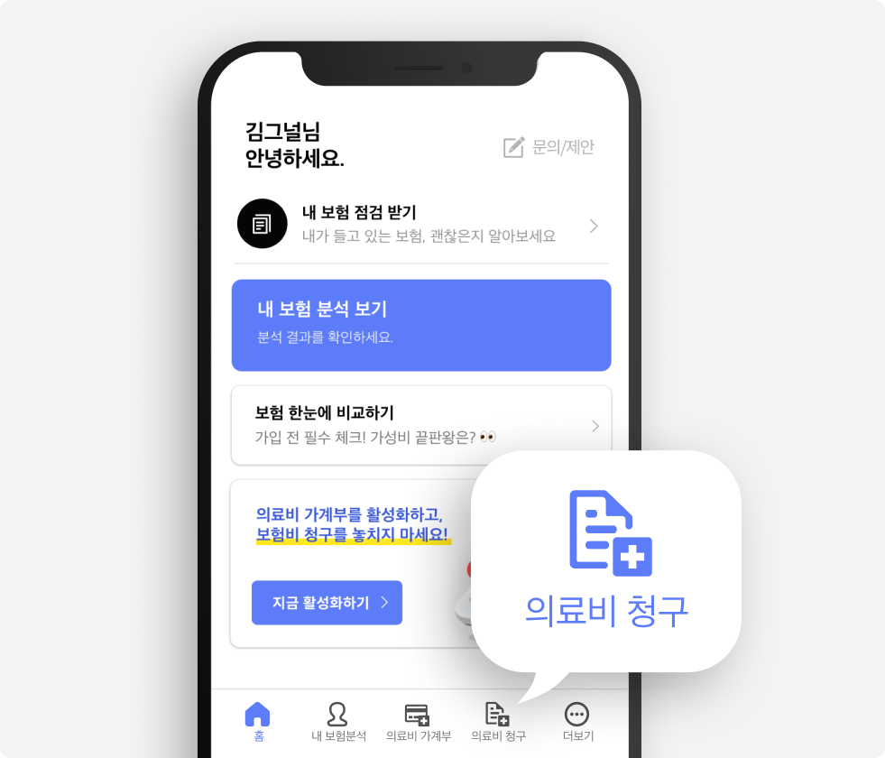

시그널플래너를 믿어주신
고마운 {{고객명}}님께 드리는 편지
안녕하세요, 시그널플래너입니다.
먼저 시그널플래너를 통해 보험 가입을 진행해주셔서 감사드립니다. 저희는 {{고객명}}님이 가입 후에도 보험 혜택을 놓치지 않도록 지속해서 케어해드리고 있습니다. 가입한 보험과 관련해 궁금한 점이 있다면 언제든 카톡, 전화로 편하게 연락해 주세요!
보험금 청구를
더 간편하게 할 수 있어요
시그널플래너 앱에서
의료비 청구 기능을 활용해보세요.

보험금 청구는 병원에 다녀오신 날로부터 3년까지 가능해요. 잘 모르겠다면, 언제든 시그널플래너 카톡 상담으로 문의해 주세요!
오직 {{고객명}}님에게만!
연금 보험, 은퇴 준비에 대한
상담을 무료로 진행해 드립니다.
시그널플래너는 CFP(국제공인재무설계사)가
연금 보험 상담을 제공해요.
연금 보험의 경우 상당한 시간을 갖고 고객님의 다양한 정보를 고려해야만 설계를 할 수 있어요. 그렇기에 전문가의 상담이 더욱더 필요해요.
다만 카톡 상담은 어려워요. 고객님의 정보를 수집하는데 시간이 오래 소요되기 때문이에요. 아래 버튼을 눌러 상담 신청을 해주시면, 화상 회의 프로그램인 ‘Zoom’으로 비대면 상담을 해드릴 예정이에요.
연금보험 상담 신청
보험금 산정과 관련한
상담이 필요하신가요?
시그널플래너에는 손해사정사가 있어
필요할 때 상담받을 수 있어요.
손해사정사는 사고 발생 시 보상 금액을 공정한 입장에서 평가하는 일을 하는 보험업계의 변호사와 같아요.
보험금 보상 관련 상담이 필요하다면, 시그널플래너 소속 전문가에게 상담을 받아보실 수 있어요.
일반적인 보험 판매사의 경우에는 손해사정사를 보유하고 있는 경우가 거의 없어요. 하지만 시그널플래너는 고객이 정확하게 보험금 산정을 파악할 필요가 있다고 생각해, 해당 인력을 보유하고 있답니다!
{{고객명}}님
가입한 보험에 관하여 궁금한 점이 생기면,
언제든 앱을 통해 카톡으로 연락주세요.
적극적으로 답변해드리겠습니다.
시그널플래너 드림💙